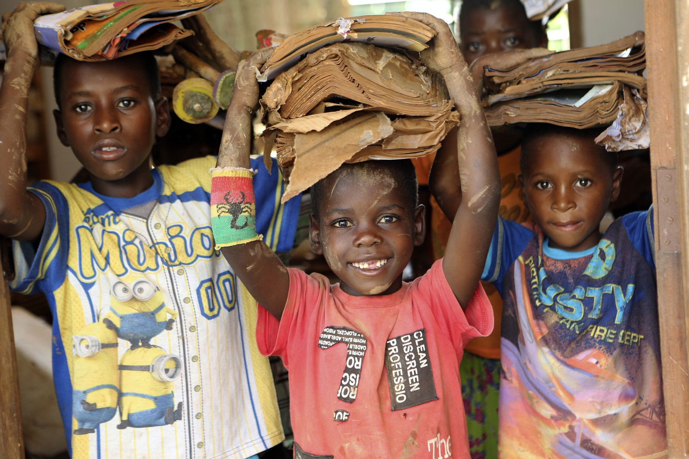
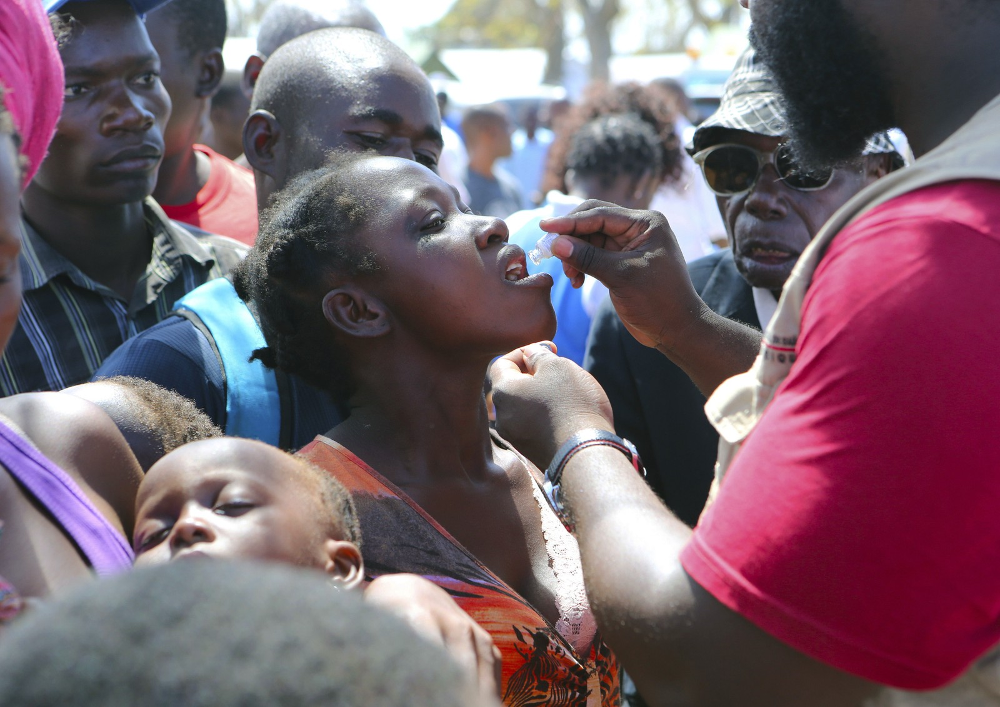

Eles precisam de você!
O donate now precisa de você!
O ciclone Idai matou mais de mil pessoas no sudeste da África
Passou de 1 mil o número de mortos pelo ciclone Idai, que devastou Moçambique, Zimbábue e Malaui há quase um mês.
As autoridades locais registraram os seguintes balanços de vítimas nesta quarta-feira (10/04/2019):
- Moçambique: 602 mortos;
- Zimbábue: 344 mortos;
- Malaui: 59 mortos.

A tragédia não é o Único problema!
Os casos de cólera, inclusive, passaram de 4 mil nesta quarta –
a doença é transmitida pela contaminação de água e alimentos por uma bactéria.
Sete pessoas morreram por causa do cólera.
A maioria dos casos do cólera foi registrada na cidade portuária de Beira, em Moçambique, a mais devastada pelo ciclone Idai.
Os ventos destruíram casas e causaram enchentes, matando centenas de pessoas e deixando muitos desabrigados.